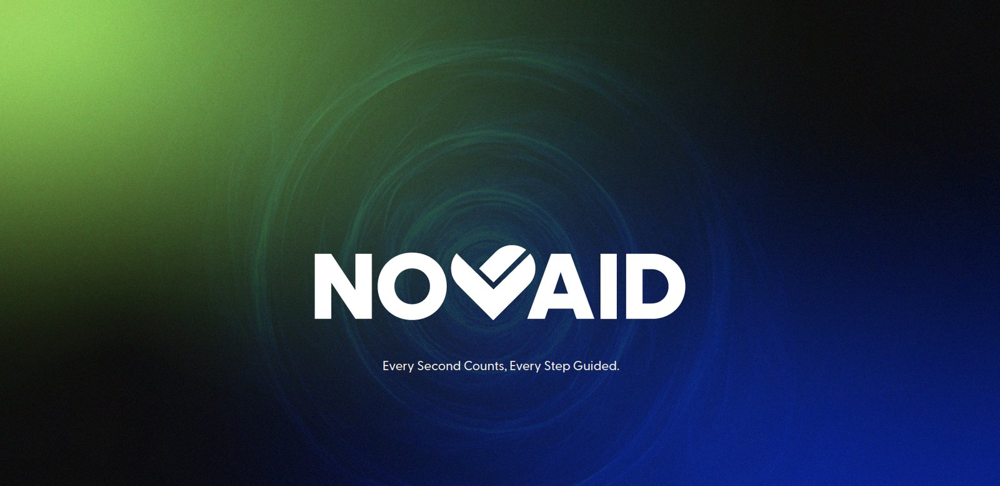
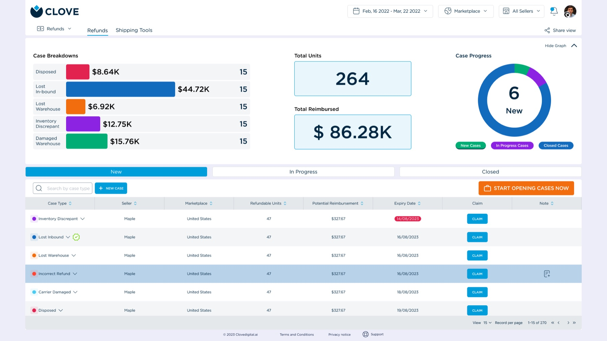
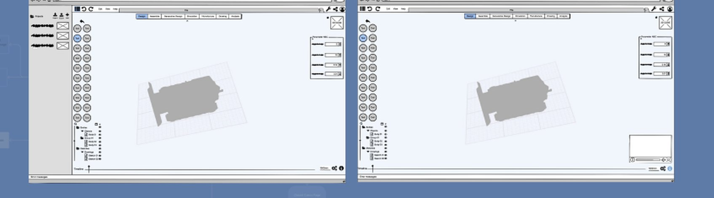
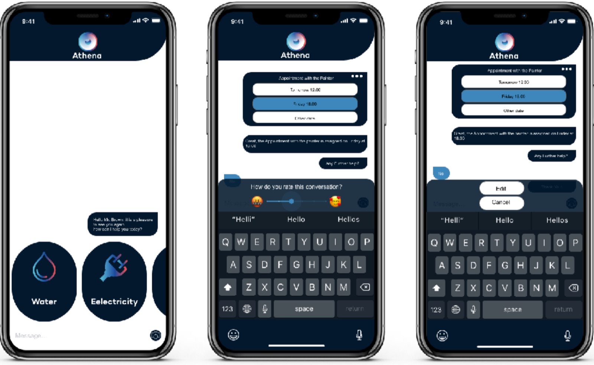
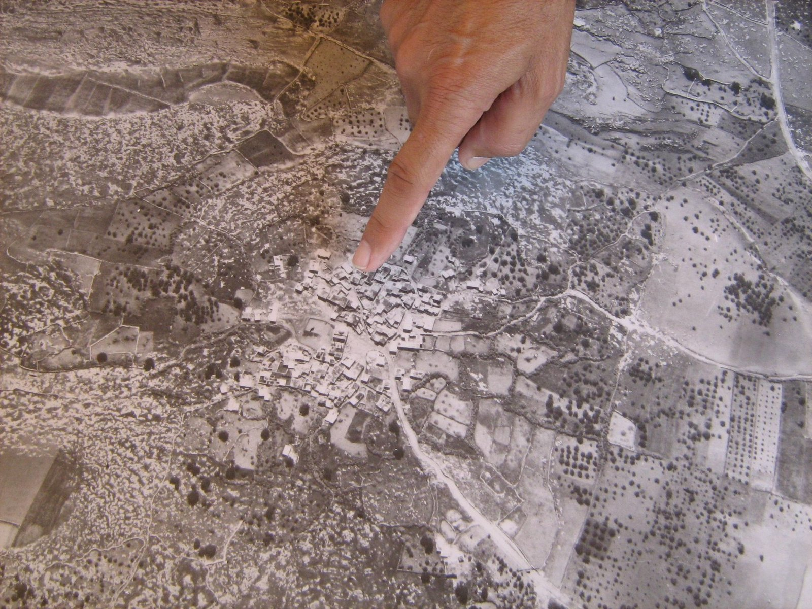
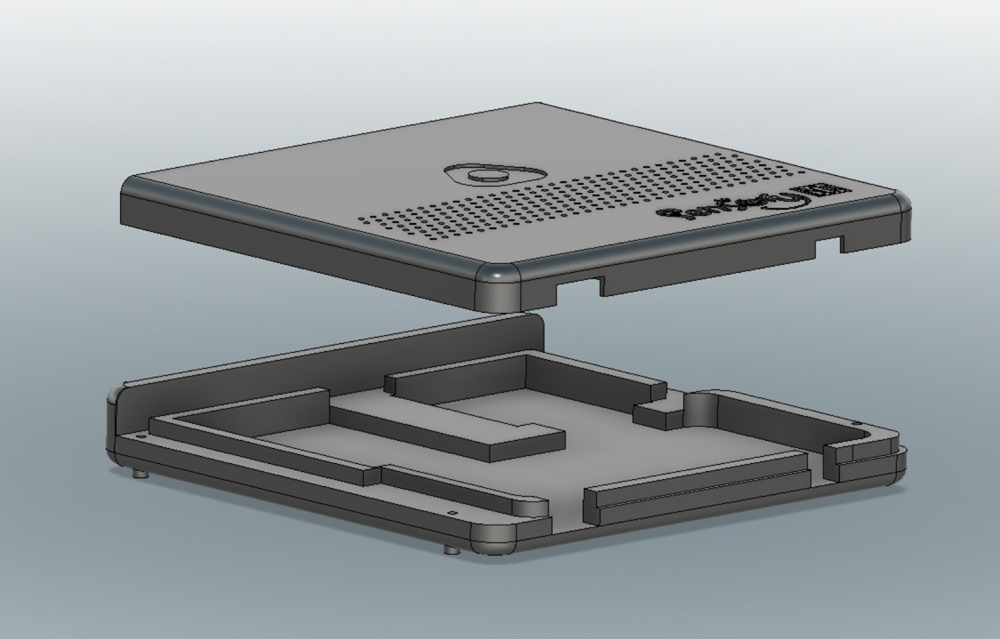
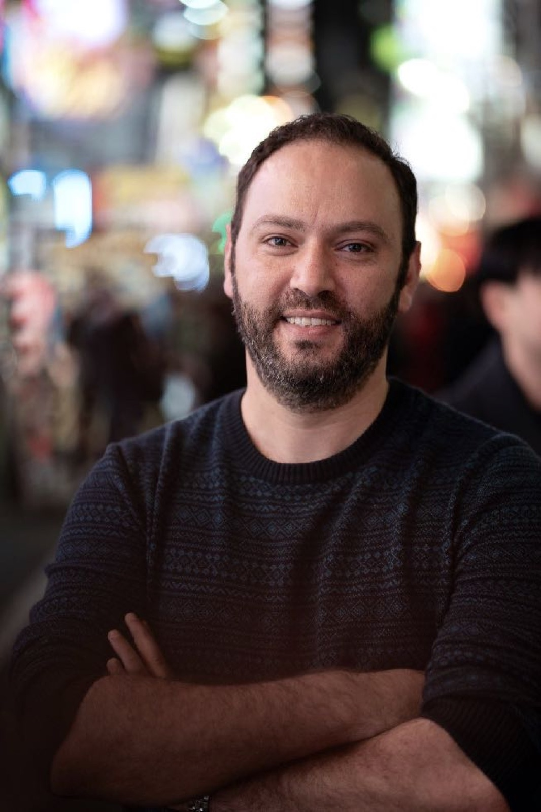
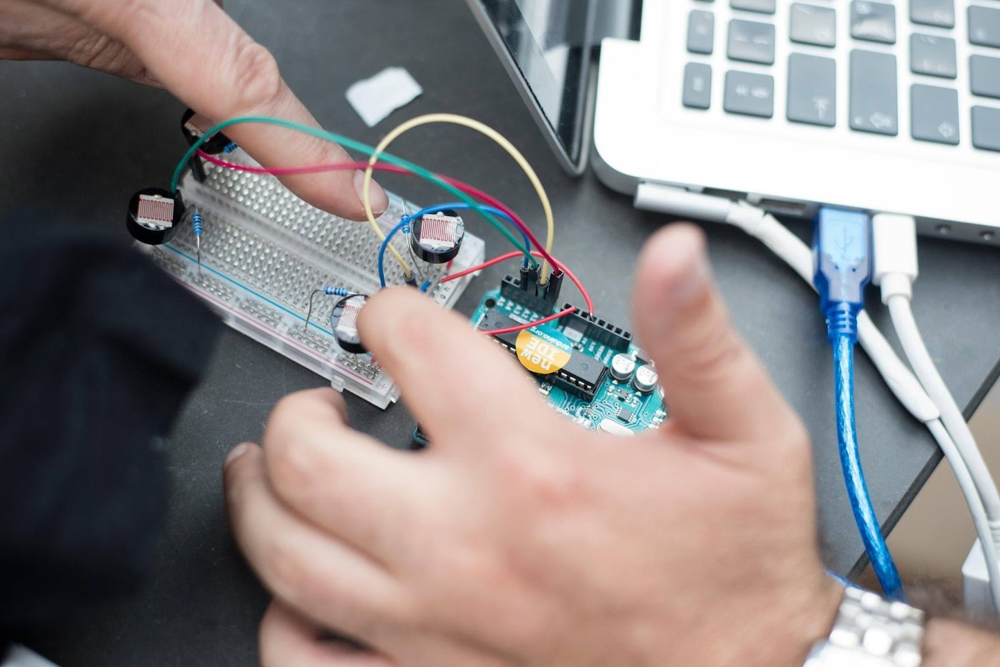
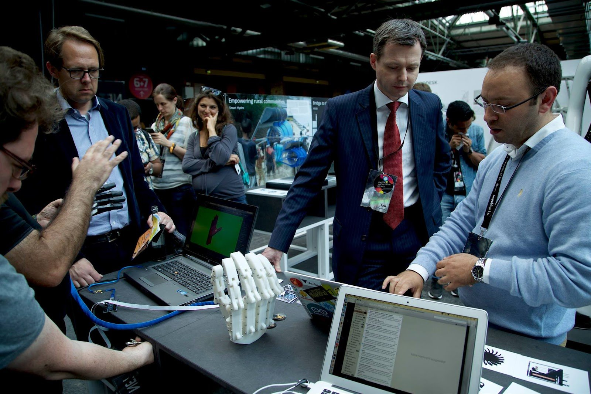

Currently Co-founder & CEO at Novaid (QSTP, Doha). Building NovaidAssist, the iOS app and AI pipeline behind hands-free first aid guidance. Open to senior and lead product design roles, remote or Gulf-based.
Selected work
Six case studies · research → prototype → shipped-
01
NovaidCo-founding and shipping a hands-free AI first aid guide, from HoloLens research to a live iOS dispatch loop.

-
02
CloveA cluttered Amazon-seller dashboard rebuilt around the one decision that matters, verified with eye-tracking.

-
03
3D Modeling UIPro-grade CAD rethought for the browser. Researched, designed and prototyped in one week.

-
04
AthenaOne conversation, two products: a chatbot residents barely type into, and the dashboard it feeds.

-
05
Glimpses from PalestineA demolished village returned to the people who remember it, in VR. Master thesis, published at ACM.

-
06
Sensory BoxTwo devices, one quiet object, shipped to full production.

Earlier work & research8
- Home Gate A one-tap Bluetooth gate opener for elderly users, shaped by the physics of a metal gate. Hardware · Mobile →
- Lemonada Teaching kids real business skills through a sales tool they actually want to open. Mobile App · Kids →
- Babylon A watch that teaches you a new language every time you check the time. Wearable →
- Castle Defender A historic site nobody visited, turned into a game played on its own walls. Interactive Installation →
- MeToo Cutting the flat-share search down to only the conversations worth having. Mobile App →
- Shared Canvas A shared surface where artists and biologists finally draw on the same page. Collaborative Platform →
- FILO A private message left on the most public object in the home. Smart Furniture →
- Religious Robot A robot that helps refugees keep their rituals, designed across two continents. Robotics · Research →
Maker first, designer always
AboutI run product and design at Novaid, a company I co-founded to put first aid guidance in a bystander’s field of view, hands-free. I do the research, design the AR interaction, and build the prototypes in code before anything reaches Figma.
Before that: a decade of product work across enterprise dashboards, conversational UI, VR research and physical products, plus an M.Sc. in Human-Computer Interaction from the University of Siegen and a paper at ACM.
I founded Vecbox, the first hackerspace in Palestine, and I still teach the way I learned there: by making things.

- NowCo-founder & CEO, Novaid (QSTP, Doha)
- DegreeM.Sc. Human-Computer Interaction, Universität Siegen
- PublishedACM, Glimpses from Palestine (2025)
- FoundedVecbox, first hackerspace in Palestine
- TeachesDesign thinking · UX & AI · Physical computing
Kind words
Collaborators · Clients · CommunityI have had the chance to work with Samer through multiple projects and community initiatives, where he has always been a model for innovation and collaboration. Samer is a leader by nature, with great understanding of technologies and how we interact with them in our daily lives.Dr. Hanna KreitemCollaborator, technology & community projects
Samer has been an active member of the Global Innovation Gathering since the early days of the community’s existence. He has helped shape and grow the GIG network, designing workshops and learning experiences for GIG events such as Maker Faires, re:publica, and GIG Impact Gatherings.Geraldine de BastionFounder, Global Innovation Gathering
I’ve collaborated with Samer on several projects. He was an enthusiastic team member, very well coordinated to work on specific strategies and systems. He is a problem solver and an innovative thinker.Mohammed YaseenLead designer, project collaborator
Selected clients & partners: CloveGoethe-InstitutInstitut Français Global Innovation GatheringJHF
Skills, with receipts
Every skill links to the work that proves itResearch & Strategy
Interaction & Interface
Emerging Technology
Daily tools: Figma, Claude Code, Swift / SwiftUI, Unity, Fusion 360, Arduino. The toolkit follows the problem.
Insights & publications
Peer-reviewed research · Design writingGlimpses from Palestine: Preserving the Inaccessible in VR Technology
Exploring how digital technology can transcend physical boundaries and preserve cultural memory, creating immersive VR experiences that turn abstract historical narratives into tangible, personal journeys.
Read the paper on ACM →Claude Code before Figma: how I design an AR app in 2026
How AI is Reshaping UX Design in 2025
Unveiling UX Flaws in Apple Vision
Exploring the Intersection of UX Design and AR
Teaching & facilitation
Workshops that build buildersDesign Thinking for Arab Women Entrepreneurs
An intensive Design Thinking workshop helping women innovators rethink challenges and build human-centered solutions for their ventures. The full process on real-world challenges: empathy, problem framing, ideation, prototyping, and testing.
UX & AI: Designing for the Intelligence Age
Integrating AI tools and techniques into the design workflow and problem-solving process.

Hardware Design & Prototyping
Physical computing and interactive design principles through hands-on Arduino workshops.

Advanced Design Technologies
New digital tools and techniques that change how design thinking becomes real work.
The academic side
Research · Teaching · Community-
Universität Siegen
GermanyM.Sc. Human-Computer Interaction
Graduate training in user-centered research methods, qualitative analysis, and the design of interactive systems. Thesis: a VR application that reconstructs demolished Palestinian villages from archival photographs and maps. Researched, designed, built, and usability-tested end to end, then published at ACM with Aal & Wulf.
Read the thesis case study → -
Siegen × Waseda
Germany / TokyoJoint research, robots for religious & cultural identity
A cross-university research project exploring how robots can help immigrants and refugees integrate into new societies while preserving religious and cultural identity. I designed the 3D model and interaction of the third robot in the collection.
Read the research case study → -
Workshops
& FacilitationDesign thinking, brainstorming, interactivity, critical thinking
I conduct workshops that move teams from divergent to convergent thinking, the same facilitation practice that opens most of my projects, from Babylon’s psychological-needs session to Novaid’s ideation sprints.
-
Community
Ramallah → BerlinVecbox & the Global Innovation Gathering
Founder of Vecbox, the first hackerspace in Palestine, built so communities could make their own technology. Active member of the Global Innovation Gathering, a network of grassroots innovators, social entrepreneurs, and makerspace founders.
I’m open to senior and lead product design roles, remote or in the Gulf, and to the occasional good conversation about where HCI is going.

LinkedIn ↗ ·
Medium ↗ ·
www.samershawar.com
Designed & curated by Samer Shawar · © 2026